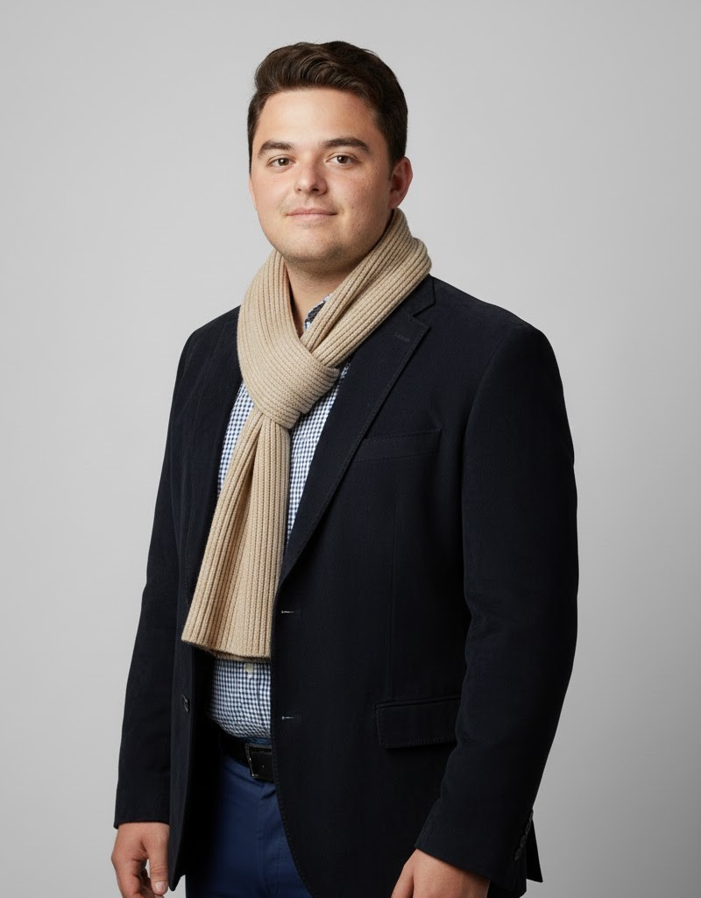

À propos
Profil
Technicien systèmes informatiques, autonome et curieux. Étudiant en BTS SIO à l'AFTEC Vannes, intéressé par les systèmes, les réseaux et le déploiement automatisé.
- Âge : 25 ans
- Mobilité : Morbihan — Permis B, véhicule personnel
- Mode de travail : télétravail ou présentiel

Compétences
Langues
Diplômes & Formations
- BTS SIO — AFTEC Vannes ( – en cours)
- BTS GPME — AFTEC Vannes ()
- Bac Pro Systèmes Numériques — option ARED ()
Expériences
- DSDEN — Technicien systèmes () : déploiement de postes, transferts de données.
- Pharmagest — Technicien maintenance (–) : préparation du matériel en officines.
- Ordinov — Technicien maintenance (–) : installations chez des particuliers et en TPE.
- Pôle Emploi — Service civique () : accompagnement aux services numériques.
- Formateur bénévole (depuis ) : cours d'informatique à domicile.
Atouts & Intérêts
- Autonomie, communication, curiosité
- Informatique, culture générale (histoire, géographie, littérature)
- Sports : natation, voile